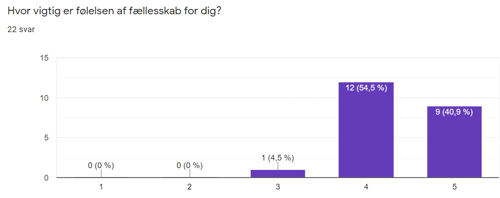

Tema 03 - Grundlæggende UX
Introduktion og formål
Dette tema handler som brugeren og brugergrænseoverflader. Formålet med dette tema er at lære samspillet mellem designrocessen og produktudvikling og hvilket teorier og metoder der er gode at bruge og hvilke fordele de har. Ud fra dette var min opgave at vælge et primært produkt at sælge med et koncept og hertil designe en hjemmeside som passer til alle omstændigheder omhandlende produktet.
Min løsning
Mit produkt var t shirts. Konceptet med disse t shirts var at de skulle være et minde fra en vigtig begivenhed i ens liv. Dette kunne være rejser med venner, brylupper eller andet. Man køber ikke bare en t shirt, man køber et minde. Hertil lavede jeg en hjemmeside som var minimalistisk og nem at finde rundt i for at gøre oplevelsen nem for kunden. Min hjemmesides primære farve var gul da gul er glædens farve. Når man kigger tilbage på t shirten skal man tænke tilbage på glade dage.
Metoder & Redskaber
Desk researh
I min desk researchede jeg e-handel, målgruppe, fællesskab og hvor meget unge går op i bæredygtighed når det kommer til tøj og . E-handel researchede jeg da mine produkter kun vil være mulige at handle online. Hertil fandt jeg ud af at det ikke vil være et problem, da mange synes at det er nemt at handle online fremfor at gå ned i en fysisk butik. Med onlinehandel er man også sikret den samme gode kundeoplevelse for hver kunde. Min målgruppe er personer mellem 18 og 35 år som måske er under uddannelse eller nyuddannet og som ofte går i byen og ofte er meget sociale. Fællesskab er meget vigtigt for personer mellem 18-35 år, mange føler sig på kanten eller udenfor fællesskab. Disse t shirts kan forhåbentligt hjælpe unge med at føle sig som en del af noget større, et fællesskab. I forhold til bæredygtighed vil mange unge gerne gå op i miljøet men ikke mange agere kun i et begrænset omfang på det når det kommer til handel af tøj.
Interview research
I min interview research valgte jeg at interviewe 3 personer. Dette var Marvin på 19 år, Annita på 22 år og Maria på 33 år. Jeg valgte disse personer da de dækkede min målgruppe meget godt. Ud fra mine interview fik jeg kvalitative svar på hvad fællesskab, minder og bæredygtighed betyder for den individuelle. Ud fra interviewene kan jeg konkludere at fællesskab betyder rigtig meget, følelsen af fællesskab vækker kun positive følelser op i alle 3. Minder betyder også meget for alle 3, men det er forskelligt hvordan de gemmer på dem og hvor ofte de tager dem frem og hvordan de gemmer på dem. Marvin husker blot sine minder hvorimod Anita har billeder på sin iphone og Maria nogengange køber fysiske ting fra begivenheden. Alle 3 går ikke særligt meget op i bæredygtigheden ved køb af tøj. Maria går en smule op i det, hun tænker mere over bæredygtighed, men hvis hun ser noget hun kan lide vil graden af bæredygtighed ikke stoppe hende. Både Marvin og Anita går slet ikke op i bæredygtigheden af tøj.
Survey research
Gennem min survey fik jeg kvantitative svar på de forskellige emner jeg valgte at fokusere på. 81,8% mener at de vigtigste begivenheder i ens liv sker i alderen 18-23, hvilket er med til at bekræfte at min målgruppe passer meget godt, da ingen over over 31 svarede på min survey. 95,5% mener at følelsen af fællesskab er vigtig til meget vigtig. Hvilket er super fint i forhold til mit princip som skal give følelsen af at være en del af et fællesskab og huske minderne sammen. 54% handler sjældent til aldrig bæredygtigt tøj. Dette viser at unge ikke går særligt meget op i bæredygtigt tøj, hvilket er til mit koncepts fordel.
Skecthing
Jeg sketchede hjemmesiden og mit logo i hånden. Det tog flere forsøg for at finde ud af hvordan jeg præcist ville have begge ting. Til logoet brugte jeg redskabet Crazy 8's, hvilket gjorde at jeg kom ud med alle de ideer jeg havde og eventuelt kunne komme på nye eller kombinere dem.
Moodboard og Styletile
Ud fra mit koncept og mine sketches lavede jeg et moodboard som skulle repræsentere stemningen og hvilken følelsen t shirtsene skulle give. Derudover lavede jeg et styletile for at hvordan UI elementerne ville se ud, hvilket farver jeg ville bruge og bare generelt elementer på siden.
Copy, microcopy og tagline
Denne del var helt ny for mig, men også meget spændende. Til mit koncept skulle jeg lave copy, microcopy og tagline. Min copy endte med at være. Microcopy: Få 10% på din første ordre når du tilmelder dig nyhedsbreve! Gratis fragt ved køb af 10 t-shirts! Løbet tør for ideer? Se med her! Tagline: “Relive the moment. Buy the t-shirt”. Alle disse sætninger er med til at tiltrække kunden og få dem til at købe.
Fotografier
Til hjemmesiden var der brug for billeder. Disse billeder tog jeg selv, og redigerede dem i Photoshop, hvor jeg både ændrede farver, fjernede elementer og klippede nye baggrunde ind.


Resultat
Efter at have fundet min ide og mit koncept begyndte jeg på al min research. Denne resarch var med til at bekræfte eller afkræfte hvorvidt mit koncept var godt og om der var brug for forbedringer. Her fik jeg fakta fra min desk research, hvor jeg lavede kildekritisk søgning på de forskellige emner omhandlende mit koncept som jeg valgte at fokusere på (fællesskab, minder, bæredygtigt tøj). Jeg fik kvalitative svar fra mine interviews med 3 forskellige personer, her svarede de på upersonlige og personlige spørgsmål. Her fik jeg detaljeret og dybdegående svar på mine spørgsmål, hvor brugeren havde mulighed at uddybe sine svar. Gennem min survey fik jeg kvantitative svar fra mange forskellige personer, her var svarene ikke uddybbende, men derimod fik jeg en del flere svar, dermed flere holdninger til de forskellige emner. Al denne research brugte jeg til at optimere mit koncept.
Derefter skulle jeg designe min hjemmeside, her skitserede jeg logo og wireframe, dette gav et udgangspunkt til når jeg skulle lave prototypen. Derudover lavede jeg også moodboard og styletile til stilen af hjemmesiden og besluttede hvilke UI elementer jeg ville bruge samt fonte osv.
Ved at tage egne billeder og redigere dem i Photoshop forbedrede jeg mine evne i programmet som jeg vil kunne bruge i fremtiden.